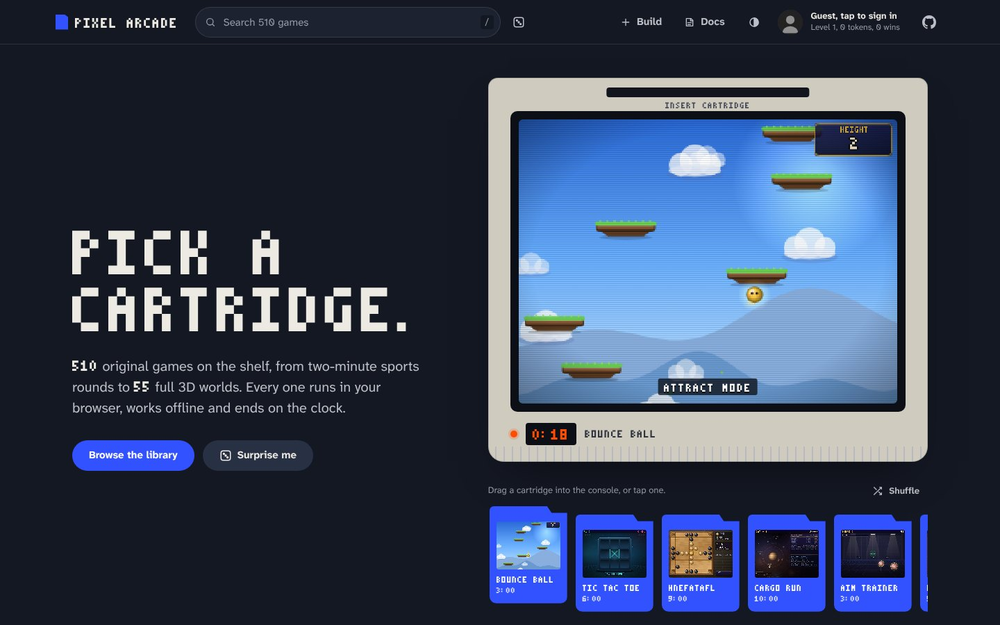
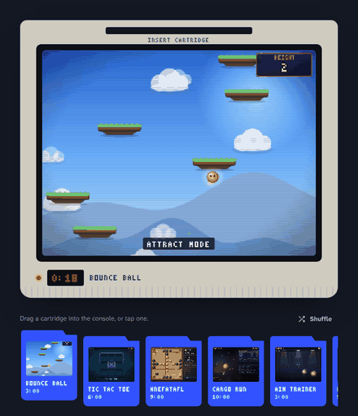

Pixel Arcade docs
Pixel Arcade is a free, open-source arcade that runs in your web browser: hundreds of short, original games plus a set of full 3D (three-dimensional) worlds. Every game ends on a round clock, most have a computer opponent, and the whole thing works offline.

Getting started
- Open normansrule.github.io/pixel-arcade.
- Drag a cartridge into the console, tap one, or pick a game from the library.
- Press Space on the title card and beat the clock. When the round ends you get a results card with your score, tokens and the option to play again.
Can't decide? Surprise me on the front page (or the dice in the top bar) starts a random game.
Controls
| Action | Keyboard | Mouse or touch |
|---|---|---|
| Move | Arrows or WASD | Aim games follow the pointer; phones get an on-screen D-pad (directional pad) |
| A: fire, jump, select | Space | Click, hold or tap |
| B | X | Right-click |
| Pause, restart, mute, graphics | P R M G | Buttons above the game screen |
| Back to the lobby | Esc | The Lobby button |
| Search the library | / | The search box |
| Two players | Player 1: WASD + F/G. Player 2: Arrows + Enter/Shift |
Library and console
The library is a set of shelves, one per genre. Each game is a cartridge spine with its mode printed at the top (1P for solo, VS for computer or two players, 3D for the worlds) and its round length at the bottom. Each genre has its own print pattern, so you can tell the shelves apart at a glance.
- Pick a spine and it slides up while its box opens on the right: a live preview, the round length, the mode, your best score, the rules, and buttons to play, favourite, see the global top 10 or read the source. Click the same spine again to play. On a phone the box comes up from the bottom of the screen.
- Arrow keys walk along a shelf, Home and End jump to its ends, and Tab moves to the next shelf.
- Shelf or Boxes: the switch above the shelves swaps the spines for box fronts with screenshots. Your choice is remembered.
- Search matches names and tags, including parts of words, so "tow def" finds the tower defence games. The filters along the top jump to a genre, your recently played games or your favourites.
The console on the front page runs in attract mode, the way arcade cabinets used to: it plays a 20-second demo of each cartridge in the tray, with the round clock counting down and turning red for the last 10 seconds. Drag a cartridge into the slot (or tap it, or select it with the arrow keys and press Enter) and the screen powers off, counts down 3, 2, 1 and boots the game. Shuffle deals a new set of cartridges.

Build your own
The builder is a 2D and 3D game editor in the browser: scenes, components, rules, play-testing, sharing and publishing. Games you make show up under Your games on the front page. The full guide is in the repository's README.
Play anywhere
- Install it. In Chrome or Edge, Install in the top bar adds Pixel Arcade as an app. On a phone, use "Add to Home Screen".
- Save it offline. Save all offline at the bottom of the front page downloads every game, so the arcade works with no internet.
- Desktop app. Windows, macOS and Linux builds are on the releases page.
- Play online. Some games can be played with a friend on the same network by swapping short codes. There's no server; see the multiplayer notes.
Scores
Your best score for each solo game is kept in your browser. Tap the profile chip in the top bar to set your GitHub username; scores are then kept per name. To post a score to the global board, press U on a game-over screen. That opens a GitHub issue titled [score] game points, so every entry is tied to a real GitHub account. Top 10 in a game's box (or L on its results card) shows the board.
Develop
There's no build step: the site is static HTML (HyperText Markup Language), plain JavaScript and a few ES (ECMAScript) modules, and every font and library ships in the repository, so it works without a CDN (content delivery network). You need Python 3 to serve files and run the tools, and Node.js for the tests.
git clone https://github.com/Normansrule/pixel-arcade.git
cd pixel-arcade
python3 -m http.server 8000 # open http://localhost:8000
node tests/test.js # every canvas game, every mode
node tests/quality.js # quality gate, writes docs/QUALITY.md
python3 tools/gen_docs.py # counts and tables in the README and docs
python3 tools/build.py # offline files and the single-file buildCI (continuous integration) runs the tests and gen_docs.py --check on every push. The engine itself is described in ARCHITECTURE.md, and every game is listed in GAMES.md.
Project structure
index.html, style.css the front page: console, shelves, game player, leaderboard
js/lobby.js shelves, the cartridge box, search, favourites, views, theme
js/console.js the console: attract mode, round clock, drag-to-insert
js/engine/ the canvas engine, one numbered file per layer
games/ the canvas games in themed packs (games/index.json is the load order)
<world>/ each full 3D world in its own folder
js/kit3d/, js/fx3d.js shared pieces for the 3D worlds
builder/ the 2D and 3D game builder
fonts/ Atkinson Hyperlegible Next, PA Pixel and the engine fonts
docs/ this page, screenshots, thumbnails and the reference docs
tools/ docs generator, thumbnails, offline files, pixel font builder
tests/ headless tests for every canvas game
desktop/ the Electron desktop appDesign
The concept is Cartridge Shelf: a library this size is a wall of games, so the site is built like printed packaging. The page is two-tone with no white: a night-navy stage (the top bar, the front page and the footer) above warm stone shelves, all printed in one cobalt ink. Dark mode turns the shelves to night too, with the cobalt a little brighter so it keeps its contrast.
Type
PA Pixel is the engine's own 3×5 bitmap font, turned into a web font by tools/pixelfont.py, so the lettering on spines, headings and the round clock is the same lettering the games draw. Reading text is Atkinson Hyperlegible Next, a typeface designed for low-vision readers. Both ship in fonts/.
Principles
- One ink, one signal. Cobalt marks what you can act on and what's selected. Signal orange is kept for the clock and your scores.
- Things behave like objects. Spines slide up when picked, cartridges tilt with the speed of your drag and spring home if you let go. The springs are short and settle quickly; nothing floats or loops for decoration.
- Show the game, not a picture of it. The console, the box and the Boxes view all show the real game running or its real screen.
- Every state is designed. Loading shelves, an empty search, a box with nothing picked, a leaderboard that can't reach GitHub and a game with no screenshot each have their own state.
- Accessible by default. Every control works from the keyboard with a visible focus ring, text meets WCAG (Web Content Accessibility Guidelines) AA contrast in both themes, and with reduced motion turned on the console holds a still frame and nothing slides.